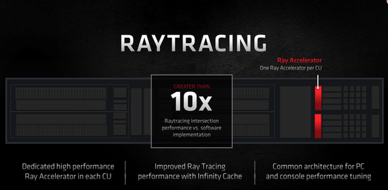

一点文章
这可能目前最好的游戏显卡 AMD RX6900XT显卡首发评测
2020年的最后一个月，AMD为所有的DIY玩家献上了一份年度终极大礼，那就是全新的RDNA 2架构的旗舰游戏显卡AMD RX6900XT，这款显卡采用了全新的核心架构，并且增加了光线追踪，在性能方面全面提升，用300W的功耗表现，对打NVIDIA RTX 3090的性能，让这款显卡成为2020年度最值得期待的一款高端游戏显卡，今天我们就来和大家一起体验，评测一下这款高端的游戏显卡。
说到本次的RNDA2架构，我们在先前的文章中已经和大家进行聊过，想要了解更多信息的小伙伴可以点击《令人惊叹的华丽反杀 AMD RX6000系列显卡首发评测》了解详情，本次我们的重点将完全放在RX 6900XT上面。
作为全新的AMD旗舰游戏显卡，在发布前夕，我参加了AMD Radeon技术事业部工程研发高级副总裁王启尚先生的小型媒体专访会，这位拥有超过20年的图形设计经验、当年一手缔造GCN架构的传奇大佬，如今又凭借他主导的RDNA 2架构再一次站在了行业技术的最前端并延续传奇。会上，王启尚为玩家和用户们解答了更多关于全新RDNA 2架构的设计细节。
自王启尚重新回到AMD至今，其成果也是显而易见的：通过更多的计算单元实现更高能效、Infinity Cache（无限缓存技术）、以及先进的功能等，成功让RDNA 2架构显卡在性能方面超过前代产品2倍、在功耗方面却仍保持300W（优化了超过50%的每瓦性能），并在功能上更好地支持DX 12 Ultimate等。
在交流会上，王启尚为我们着重讲解了本次新架构的一大突破性技术 —— Infinity Cache，相比传统方式，Infinity Cache可以成倍提升带宽性能以及降低延迟，与此同时却只需要更低功耗，从而大幅度提升性能。同时，该架构凭借强劲的性能和频率还非常适合超频，不仅可以加强游戏性能，更能提升光追性能。

谈到当下最热门的光追技术和游戏，王启尚解释道：“我们在计算单元中嵌入了Ray Accelerator，因此越多的计算单元也意味着更强的光追性能。我们相信未来会有越来越多的光追游戏针对RDNA 2架构进行优化，因此在光追性能方面RDNA 2架构仍有很大的发展空间和潜力。”
此外，令玩家们欣喜的是，RDNA 2架构的另一大杀器Smart Access Memory(显存智取技术)是基于PCIe标准和Resizable BAR的功能，可通过深入验证以及平台优化进行开发，在其他平台上实现Re-BAR同时提高游戏性能并没有技术上的限制，此项技术用在Intel上同样可以实现大幅提升游戏帧数的成效，至此，AMD实现了主机&PC高性能图形处理器的全覆盖，完全补足了此前在高端游戏显卡方面的缺憾，并且RX 6900XT喜人的价格和功耗表现，让这款显卡毫无疑问成为目前市面上最具有吸引力的高性能游戏显卡，对于广大的DIY玩家来讲，未来在选择显卡方面，AMD RX 6000系列显无疑是更加优秀的装机或者升级方案。
下面我们就一起来看一看最新的RX 6900XT表现究竟如何，首先来看一下外观部分。
外观方面，这款显卡延续了三风扇的造型，显卡正面的金属质感非常出色，兼顾了散热性能和超高的颜值。

显卡顶部，依旧是那个让人无法忘怀的一抹红色，这点是我非常喜欢的，加上这一抹红色为整块显卡增添了灵魂，并且在显卡的顶部是一个支持RGB灯光调节的“RADEON”信仰LOGO灯，玩家可以根据自己的喜好进行自由调节。
在整体做工方面，显卡的质感非常出色，显卡的正面风扇罩在光线下都泛着金属的光泽，对于显卡质感有高要求的用户进行选择。
另外显卡风扇方面，这款显卡当然支持自动启停，在低温度的情况下，显卡不会转动。
显卡背面是整块的金属背板，中间是核心部分，同时显卡的右下角是一个R的标志，彰显AMD Radeon基因。
接口方面，这款显卡提供了3个DP接口和一个Type-C接口，取消了HDMI接口，这也符合当下整个显示输出的潮流，并且还能兼顾VR用户的日常游戏需求，这点很赞。